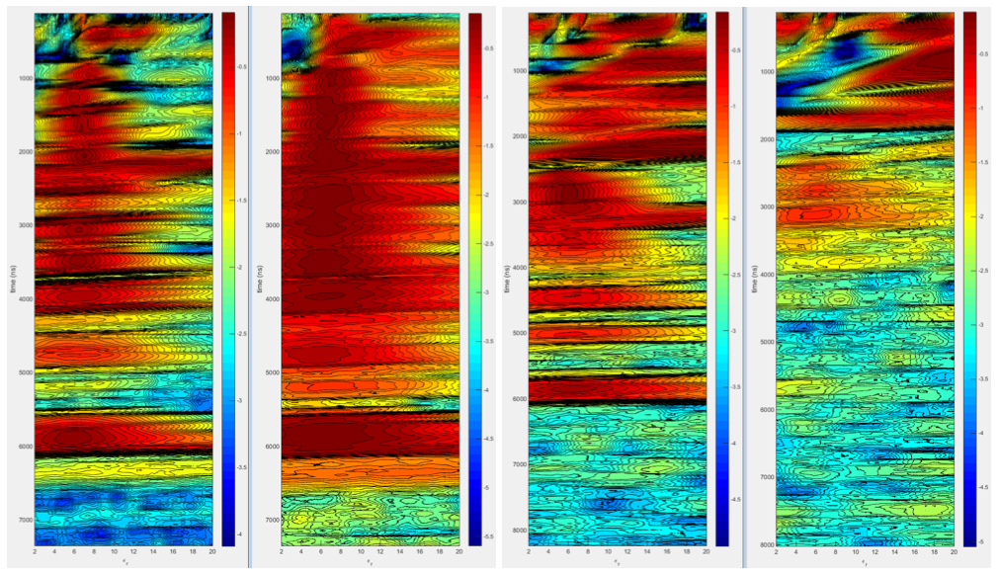

Introduction
Applications of ground penetrating radar (Daniels, 2004; Jol, 2009) are currently mostly limited to shallow depths of a few tens of meters, because of the strong attenuation of radio waves in most subsurface materials at a typical frequency range of 15 − 1000MHz. Losses are caused by conductivity and polarization effects due to moisture content or inherent material properties. Deeper penetration has been achieved with much lower frequencies (1 − 5Mhz) using very large antenna’s in resistive environments such as Martian rock, ice, and permafrost (Berthelier et al., 2005; Ciarletti et al., 2003; Angelopoulos et al., 2013). In this article we present results of simulations of scans with a low frequency pulsed radar system through dry limestone. The scenario we consider is the detection of a water rich layer at depths of 350m and lower under dry resistive limestone. Electrical properties of limestone were measured previously in-situ by trans illumination scans through large underground pillars (Doel et al., 2014). Material parameters were used in a one dimensional full waveform FDTD simulator, and a two dimensional simulator based on the ray approximation to Maxwell’s equations. The radar system was modeled after the Adrok scanner (Stove and van den Doel, 2015) for which we measured the transmitted pulse shape and noise levels.
Two types of radar scans were simulated. In STARE scans transmitter and receiver are placed about 30cm apart on the surface and reflections from transmitted pulses are measured repeatedly and stacked (averaged) for denoising. From the arrival times of observed returns, reflecting boundaries can be localized if the propagation velocity is known. To estimate velocity we perform a WARR (Reynolds, 1998) scan, where data is acquired with transmitter and receiver at varying distances. Using triangulation methods such as normal move out analysis or velocity spectrum analysis allows the estimation of average velocity at a specific reflection time. Velocity v is related to relative permittivity εr (referred to as “the dielectric” below) by v = c/√εr with c the speed of light in vacuum. Pulse dispersion is negligible in the frequency range under consideration so we ignore the small variations of εr with frequency. Results are used to test efficacy of data analysis methods, determine the effect of backscatter caused by irregularities in the limestone layer, estimate how much stacking is required, and estimate maximum achievable penetration depth with the modeled system.
Wave propagation model
We implemented a 1 + 1 dimensional time-domain finite difference simulation of Maxwell’s equations in a medium described by dielectric εr (x), static conductivity σ (x) and a Debye polarization model (Debye, 1929) with relaxation time τ to account for frequency dependent losses. The model is similar to the one described in (Ciarletti et al., 2003), except we added a polarization component. Material properties are assumed to be constant in time but can depend on location. The model is summarized by the following system of partial differential equations:
with E the electrical field, P the polarization, ε0 = 8.85 × 10−12F/m and μ0 = 4π × 10−7H/m. The equations are discretized with a fourth order finite difference approximation for the spatial derivatives and a leap-frog method for the time stepping (Ascher, 2008). At the simulation boundaries we use perfectly matched layers (Berenger, 1994). A spatial grid spacing of 10cm and a time step of 0.15ns was used and found to be accurate enough for frequencies up to 100MHz. The size of the absorbing boundaries were 400m on the top and 200m on the bottom.
This model permits the simulation of STARE scans, where transmitter and receiver are at (almost) the same position on the surface. During WARR scans we measure returns with transmitter and receiver at increasing separations. For this a two dimensional simulation is required. Due to the small grid spacing necessary and the long simulation times to capture deep reflections a FDTD simulator would require very large computational resources. For this reason we used a ray tracing method instead. A ray emitted from the transmitter is intersected with a boundary from a layered earth model, and the ray is split into a transmitted and reflected ray using standard geometric optics methods. These two rays then hit other boundaries and are split again, leading to an exponential growth of the number of rays which we cull by tracking the amplitude attenuation due to reflection coefficients and propagation losses and dropping rays that are attenuated more than 60dB. After all rays are computed the received returns on a line on the surface are rendered by propagating the output of the transmitter through all rays, and applying frequency dependent attenuation as obtained from the FDTD model. We also add a direct ground wave component.
The emitted pulse of the modeled system was measured in air as a time domain trace. It is about 200ns long and contains frequency components from 2 − 70MHz with significant peaks at 3, 20, 30, and 65MHz (Doel et al., 2014). Noise levels (background and internal) were measured to be about 1% of the peak value of the amplitude at a distance of 30cm and are added to the simulated measurements accordingly. In normal operation mode the receiver collects 500 traces which are stacked for noise reduction. Maximum acquisition rate for 20μs long traces is 10,000 traces per minute. The sampling rate is 2.5GHz.
Ground models
We consider stratified earth models with low conductivity rock down to depth D at which we assume a strongly reflecting and absorbing aquifer-like structure modeled as material with εr = 40 and conductivity σ = 0.01S/m. For the rock parameters we used the values measured in-situ using trans illumination experiments through underground limestone pillars (Doel et al., 2014): σ = 0.075mS/m, τ = 0.4ns, εr = 6. These values are consistent with for example table 7.1 in (Reynolds, 1998). The skin depth (distance at which the amplitude reduces by a factor e) varies from about 160m at 3MHz to 4m at 70Mhz. Small fluctuations in composition of the rock layer cause backscatter which can be detected with a WARR scan and used to estimate the dielectric. To model these irregularities, we added small random variations ∆εr in the dielectric, with a Gaussian distribution with standard deviation 0.25 (other values are also discussed below) at random depth intervals ∆x which are taken from an exponential distribution with mean 5m.
Simulation results
The first scenario we considered consists of a reflector at D = 350m under a randomized limestone layer as described above. We first ran the FDTD simulation to determine if a reflection from the bottom, which should appear at 5716ns, is detectable using standard denoising of a STARE scan, i.e., a stack of 500 traces. Visual inspection of the raw stacked trace did not show a return, but after applying a low pass filter with a cut-off of 5MHz a faint blip could be seen. To localize such faint returns we display a “stacked correlation” plot. This is derived by splitting the collection of traces randomly into two equal sized sets (250 traces each in this case), and average (stack) both sets to obtain two time domain traces. We compute the correlation between the pair of stacked traces over time windows of 300ns, i.e., slightly larger than the pulse length. This is repeated over 100 random bisections of the stack and for each time window we compute the mean and standard deviation of the correlation. Peaks that are significantly above the standard deviation are interpreted as likely reflections. If results are ambiguous the measurement is repeated several times to account for transient noises sources which can cause spurious correlation peaks, and only the peaks in the correlation plots that occur in all measurements are deemed significant. The peak is localized at 5800ns which translated to 355m using εr = 6, an error of 5m. Next we assumed that εr is unknown and needs to be estimated from a WARR scan. We collected traces with the separation between transmitter and receiver increasing up to 100m in 20 steps, collecting 500 traces at each separation. The data was then processed using a semblance based velocity analysis (Yilmaz, 2001). This estimation method assumes all reflections are primaries. The best time window over which to compute semblance was found by trial and error to be 260ns, close to the temporal extent of the pulse. We plot semblance versus dielectric εr, rather than velocity and refer to this as the dielectric spectrum. Visually tracking the peaks in the display allows an estimation of the mean εr (actually square of the weighted means of √εr) over time to allow depth estimation.
In Fig. 1 second plot we depict the dielectric spectrum computed directly from the raw traces. While the peaks are consistent with εr = 6 they are very broad and accuracy is low. The resolution can be im- proved considerably by computing semblance of the phase rather than of the raw traces. Instantaneous phase is extracted by standard methods using the Hilbert transform (Taner et al., 1979). The phase based spectrum is depicted on the left in Fig. 1 and clearly gives much sharper values. We shall use the phase based spectrum from here on. Values are close to 6 below 1200ns, above that the ray model becomes inaccurate as the ray paths need to be longer than the wavelength which is about 40m. The reflection at the bottom has a peak at 5.85 which translates to an error of about 5m in depth estimation, similar to the error in localizing the reflection from a STARE scan (assuming εr is known a-priori) discussed earlier. Experimenting with the number of measurements on the 100m WARR line showed improved results up to about 20, larger values did not significantly improve the results. The length of the WARR line strongly affects the accuracy of the velocity estimation. Clearly in practice the line should be as long as is practical, but even for a short line of 50m the estimate is not far off.
 Figure 1 Simulation of a water layer at depth 350m and resulting dielectric spectrum using the raw traces (1) and using the extracted phase (2). Depicted is the logarithm of the semblance versus εr and time. WARR length was 100m. On the right two pictures: Dielectric spectra for rougher rock models above 350m. For (3) we have fluctuations in εr with standard deviation 0.5, for (4) 1.0. Stacking has been increased to 5000.We investigated the effect of the irregularities in the upper rock layer by constructing synthetic ground models with dielectric fluctuations of 0.5 and 1.0 (standard deviation) instead of 0.25. We expect additional attenuation due to more scattering from the irregularities and multiple reflections should negatively affect the efficacy of the dielectric spectrum estimation. Indeed we found that the velocity at 350m could not be determined without additional stacking to 5000 traces for the 0.5 case. For the 1.0 case no amount of stacking allowed a reading on the dielectric. An analysis of the ray paths generated by the simulation showed that the WARR measurement contains a significant amount of multiples in the latter case, which prevents the dielectric spectrum method from working properly. The randomly generated values of εr had values between 10 and 3 which causes these strong internal reflections. Such large variations in dielectric are probably inconsistent with the dry limestone assumption we made but could perhaps occur in different environments. The FDTD STARE simulation for this case (1.0) however indicated that the reflection from the water layer can still be detected with the correlation plot method, even without any additional stacking. However spurious random peaks appear, which can be recognized by repeating the experiment with different random noise realizations.
We now return to the original rock model with variations of 0.25 in the dielectric and estimate the maximum detection depth for the water layer given the constraints on equipment and time. The maximum acquisition rate of the radar scanner is 10000 traces per minute, so increasing the stacking from 500 to 250000 and taking 20 measurements on the WARR line would take about one working day including overhead for moving and setting up the equipment. Simulations with this amount of stacking for models with the water layer at various depths indicate that up to about 600m depth the reflection can still be detected and the velocity determined from a 200m long WARR scan. STARE scans above a 600m deep water layer show a common peak corresponding to a depth location of 606m. Because we have increased the stacking by a factor 500, the coherent reflections are amplified by a factor √500 ≈ 23, compared to the 350m simulations. The radar pulse had to travel an additional 500m through rock, which should cause an additional attenuation by a factor e500/160 ≈ 22, which is in good agreement with the simulation results.
Conclusions
Results indicate that with the modeled equipment a water layer can be detected quickly at a depth of 350m through limestone by detecting the arrival time of the reflection using a correlation analysis of a STARE scan and a phase based velocity spectrum analysis of a WARR scan over a 100m line. Small irregularities in dielectric of about 0.25 in the limestone are befenificial for the interpretation but if these fluctuation become very large multiples interfere with dielectric estimation. Under the constraint of a one day experiment and limitations on the scan rate, maximum exploration depth was estimated at 600m. Results from this specific scenario may be applicable to exploration in other highly resistive earth based materials such as granite, igneous rocks, certain types of coal, and permafrost (Reynolds, 1998).